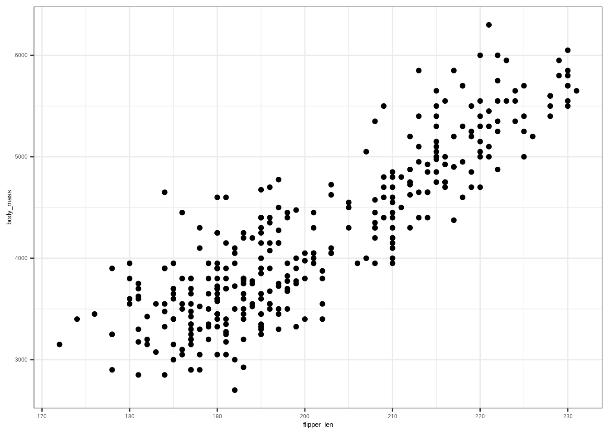
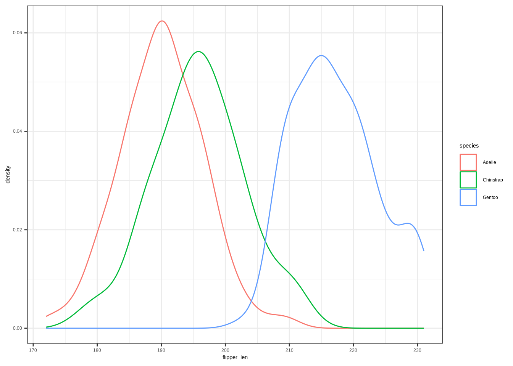
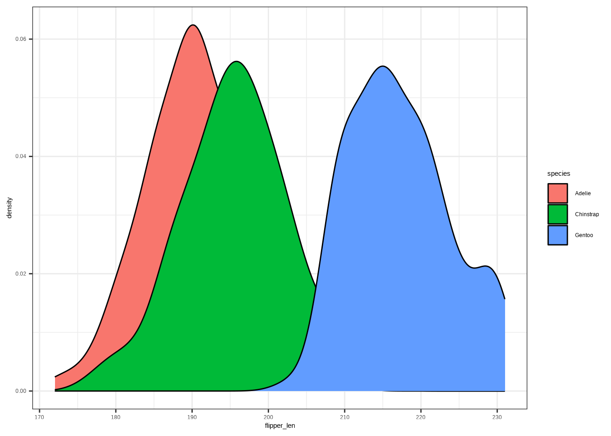
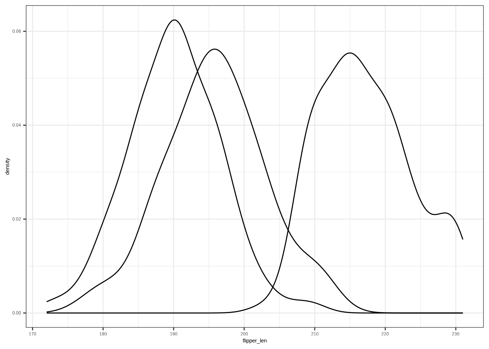
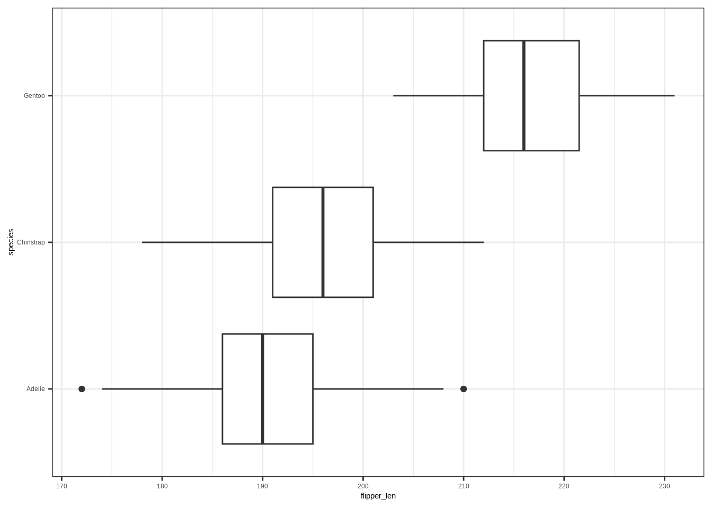
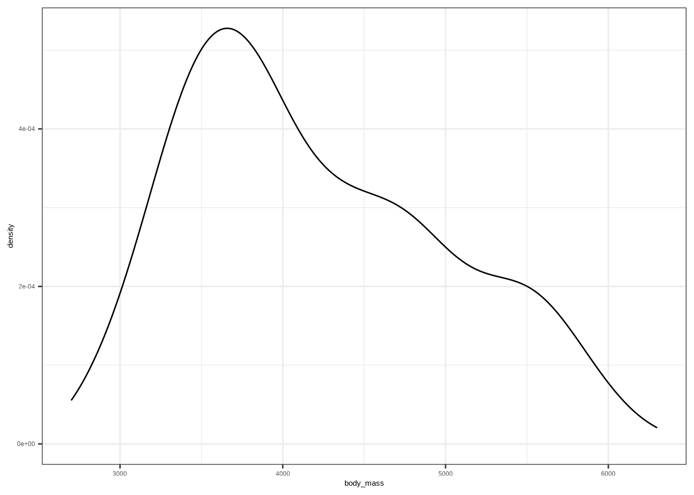
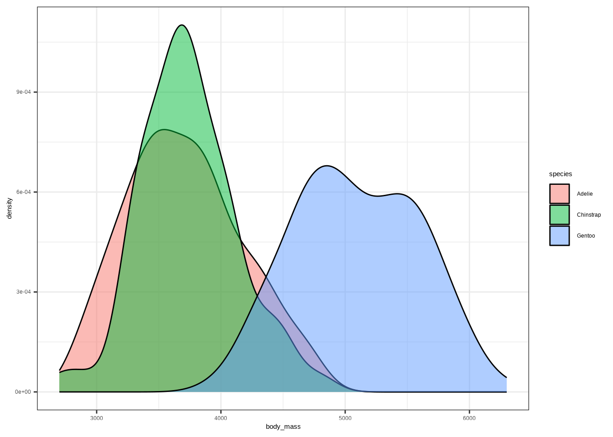
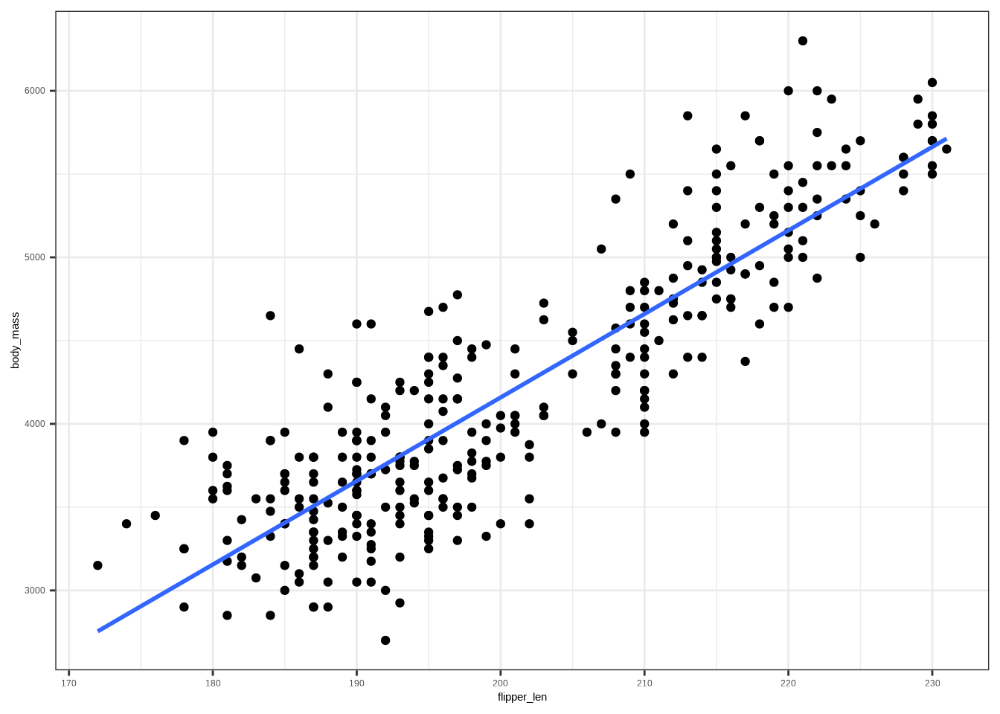

ggplot(penguins, aes(x = flipper_len, y = body_mass)) +
geom_point()
Copy the following code and put it in a code cell in Google Colab. Only do this if you are using a completely new notebook.
# This code will load the R packages we will use
install.packages(c("rcistats", "taylor",,
repos = c("https://inqs909.r-universe.dev",
"https://cloud.r-project.org")))
library(rcistats)
library(tidyverse)
library(taylor)DATA → your data frame/tibble (e.g., penguins)Y → the outcome variable (e.g., body_mass_g)X, X1, X2, …, Xp → predictor variables (e.g flipper_length_mm, species)factor(X) if needed).A scatter plot reveals association, trend direction, and form.
Template:
ggplot(DATA, aes(x = VAR1, y = VAR2)) +
geom_point()Example:
ggplot(penguins, aes(x = flipper_len, y = body_mass)) +
geom_point()
A density plot is a way to visualize the distribution of a continuous variable — it shows where data values are concentrated (dense) and where they are sparse.
Template:
ggplot(DATA, aes(x = NUM, color = CAT)) +
geom_density()Example:
ggplot(penguins, aes(x = flipper_len, color = species)) +
geom_density()
Template:
ggplot(DATA, aes(x = NUM, fill = CAT)) +
geom_density()Example:
ggplot(penguins, aes(x = flipper_len, fill = species)) +
geom_density()
Template:
ggplot(DATA, aes(x = NUM, group = CAT)) +
geom_density()Example:
ggplot(penguins, aes(x = flipper_len, group = species)) +
geom_density()
A box plot summarizes median, quartiles, and potential outliers.
Template:
ggplot(DATA, aes(x = NUM, y = CAT)) +
geom_boxplot()Example:
ggplot(penguins, aes(x = flipper_len, y = species)) +
geom_boxplot()
This is the process of trying to reduce unexplained variation in an outcome by using informative predictors — think getting it less wrong with an educated guess.
ggplot(penguins, aes(body_mass)) +
geom_density()
If we know some information, we can get less wrong over time.
# Same variable, grouped by a category (species)
ggplot(penguins, aes(body_mass, fill = species)) +
geom_density(alpha = .5)
We believe the outcome (\(Y\)) is generated by an unknown data generated process (\(DGP_1\)): \(Y \sim DGP_1\). A minimal model says all outcomes are generated from a number (labeled as \(\beta_0\)) plus or minus some error (\(\varepsilon\)):
\[ Y = \beta_0 + \varepsilon \]
This is known as a simple model and the errors are simulated by a different DGP \(\varepsilon \sim DGP_2\). The simple model is unknown, so we construct and estimated simple model for our best guess on how the data is generated:
\[ \hat Y = \hat\beta_0 \]
The carats above the letters are known as hats, which means best guess.
Observed vs. estimated:
Template:
lm(Y ~ 1, data = DATA)DATA → your data (e.g., penguins).Y → the outcome variable (e.g., body_mass_g).Example:
# Fit the null (intercept-only) model
m0 <- lm(body_mass ~ 1, data = penguins)
m0#>
#> Call:
#> lm(formula = body_mass ~ 1, data = penguins)
#>
#> Coefficients:
#> (Intercept)
#> 4207Model form:
\[ Y = \beta_0 + \beta_1 X + \varepsilon, \quad \hat Y = \hat\beta_0 + \hat\beta_1 X. \]
# Scatter plot
ggplot(penguins, aes(flipper_len, body_mass)) +
geom_point()
# Add a least-squares line
ggplot(penguins, aes(flipper_len, body_mass)) +
geom_point() +
stat_smooth(method = "lm", se = FALSE)
# Fit the model
m1 <- lm(body_mass ~ flipper_len, data = penguins)
m1#>
#> Call:
#> lm(formula = body_mass ~ flipper_len, data = penguins)
#>
#> Coefficients:
#> (Intercept) flipper_len
#> -5872.09 50.15Template:
lm(Y ~ X, data = DATA)When we use a categorical predictor in a regression, R needs to convert the categories into numbers. This is done using dummy variables (also called indicator variables).
1 if the observation belongs to that category0 otherwiseExample: Penguin species:
The species variable has 3 categories: Adelie, Chinstrap, Gentoo.
We create two dummy variables:
| Species | \(D_1\) (Chinstrap) | \(D_2\) (Gentoo) |
|---|---|---|
| Adelie | 0 | 0 |
| Chinstrap | 1 | 0 |
| Gentoo | 0 | 1 |
If we model penguin body mass (\(Y\)) with species:
\[ \hat Y_i = \beta_0 + \beta_1 D_{1i} + \beta_2 D_{2i} \]
Predictions:
- Adelie: \(\hat Y = \beta_0\)
- Chinstrap: \(\hat Y = \beta_0 + \beta_1\)
- Gentoo: \(\hat Y = \beta_0 + \beta_2\)
R automatically creates dummy variables when you use a factor in lm().
The first level of the factor is used as the reference group (by default).
# Fit model with species (factor) as predictor
m <- lm(body_mass ~ species, data = penguins)
summary(m)#>
#> Call:
#> lm(formula = body_mass ~ species, data = penguins)
#>
#> Residuals:
#> Min 1Q Median 3Q Max
#> -1142.44 -342.44 -33.09 307.56 1207.56
#>
#> Coefficients:
#> Estimate Std. Error t value Pr(>|t|)
#> (Intercept) 3706.16 38.14 97.184 <2e-16 ***
#> speciesChinstrap 26.92 67.65 0.398 0.691
#> speciesGentoo 1386.27 56.91 24.359 <2e-16 ***
#> ---
#> Signif. codes: 0 '***' 0.001 '**' 0.01 '*' 0.05 '.' 0.1 ' ' 1
#>
#> Residual standard error: 460.8 on 330 degrees of freedom
#> Multiple R-squared: 0.6745, Adjusted R-squared: 0.6725
#> F-statistic: 341.9 on 2 and 330 DF, p-value: < 2.2e-16Templates:
lm(Y ~ X, data = DATA) # if X is already a factor
lm(Y ~ factor(X), data = DATA) # force X to be treated as factorThe function num_by_cat_stats() quickly computes descriptive statistics of a numerical variable grouped by a categorical variable.
Template:
num_by_cat_stats(DATA, NUM, CAT)DATA: the data frame (e.g., penguins)NUM: the numerical variable you want to summarize (e.g., body_mass_g)CAT: the categorical variable that defines groups (e.g., species)Example:
num_by_cat_stats(penguins, body_mass, species)#> Categories min q25 mean median q75 max sd var iqr
#> 1 Adelie 2850 3362.5 3706.164 3700 4000 4775 458.620 210332.4 637.5
#> 2 Chinstrap 2700 3487.5 3733.088 3700 3950 4800 384.335 147713.5 462.5
#> 3 Gentoo 3950 4700.0 5092.437 5050 5500 6300 501.476 251478.3 800.0
#> missing
#> 1 0
#> 2 0
#> 3 0Correlation (two numerical variables): \(-1 \le r \le 1\). For simple linear regression, \(R^2 = r^2\).
cor(penguins$body_mass, penguins$flipper_len)#> [1] 0.8729789# R^2 helper
r2(lm(body_mass ~ flipper_leng, data = penguins))#> Error:
#> ! object 'flipper_leng' not foundTemplate:
# Correlation
cor(DATA$Y, DATA$X)
## R-Squared
xlm <- lm(Y ~ X, data = DATA);
r2(xlm)Model: \(\hat Y = \hat\beta_0 + \hat\beta_1 X\). Supply new X to get a prediction \(\hat Y\).
Template:
m <- lm(Y ~ X, data = DATA)
ndf <- data.frame(X = VAL)
predict(m, newdata = ndf)Examples:
xlm1 <- lm(body_mass ~ species, data = penguins)
predict(xlm1, newdata = data.frame(species = "Gentoo"))#> 1
#> 5092.437xlm2 <- lm(body_mass ~ flipper_len, data = penguins)
predict(xlm2, newdata = data.frame(flipper_len = 190))#> 1
#> 3657.028Model: \(Y = \beta_0 + \beta_1 X_1 + \cdots + \beta_p X_p + \varepsilon\)
Template:
lm(Y ~ X1 + X2 + ... + Xp, data = DATA)Example: danceability ~ mode_name + valence + energy
# Example: danceability ~ mode_name + valence + energy
lm(danceability ~ mode_name + valence + energy, data = taylor_album_songs)#>
#> Call:
#> lm(formula = danceability ~ mode_name + valence + energy, data = taylor_album_songs)
#>
#> Coefficients:
#> (Intercept) mode_nameminor valence energy
#> 0.53816 0.08386 0.17554 -0.05944\[R^2 = 1 - \frac{\text{Var(resid)}}{\text{Var}(Y)}, \quad R^2_{adj} = 1 - \Big(\frac{\text{Var(resid)}}{\text{Var}(Y)}\Big) \cdot \frac{n-1}{n-k-1}\]
m <- lm(danceability ~ mode_name + valence + energy, data = taylor_album_songs)
ar2(m)#> [1] 0.09148268lm(Y ~ 1, data = DATA)DATA → your data frame (e.g., penguins)Y → the outcome variable (e.g., body_mass)lm(Y ~ X, data = DATA)DATA → your data frame (e.g., penguins)Y → the outcome variable (e.g., body_mass)X → predictor variables (e.g flipper_length_mm)lm(Y ~ X, data = DATA) DATA → your data frame (e.g., penguins)Y → the outcome variable (e.g., body_mass)X → predictor variables (e.g species)lm(Y ~ factor(X), data = DATA) # coerce X to factorDATA → your data frame (e.g., penguins)Y → the outcome variable (e.g., body_mass)X → predictor variables (e.g species)num_by_cat_stats(DATA, NUM, CAT)DATA: the data frame (e.g., penguins)NUM: the numerical variable you want to summarize (e.g., body_mass)CAT: the categorical variable that defines groups (e.g., species)cor(DATA$Y, DATA$X, use = "complete.obs")DATA → your data frame (e.g., penguins)Y → the outcome variable (e.g., body_mass)X → predictor variables (e.g flipper_len)m <- lm(Y ~ X, data = DATA)
r2(m)DATA → your data frame (e.g., penguins)Y → the outcome variable (e.g., body_mass)X → predictor variables (e.g flipper_len)lm(Y ~ X1 + X2 + ... + Xp, data = DATA)DATA → your data frame (e.g., penguins)Y → the outcome variable (e.g., body_mass)X1, X2, …, Xp → predictor variables (e.g flipper_len, species)# Adjusted R^2
m <- lm(Y ~ X1 + X2 + ... + Xp, data = DATA)
ar2(m)DATA → your data frame (e.g., penguins)Y → the outcome variable (e.g., body_mass)X1, X2, …, Xp → predictor variables (e.g flipper_len, species)m <- lm(Y ~ X, data = DATA)
ndf <- data.frame(X = VAL)
predict(m, newdata = ndf)DATA → your data frame (e.g., penguins)Y → the outcome variable (e.g., body_mass)X → predictor variables (e.g flipper_len)m <- lm(Y ~ X1 + X2 + ... + Xp, data = DATA)
ndf <- data.frame(X1 = VAL1, X2 = VAL2, ..., Xp = VALp)
predict(m, newdata = ndf)DATA → your data frame (e.g., penguins)Y → the outcome variable (e.g., body_mass)X1, X2, …, Xp → predictor variables (e.g flipper_len, species)VAL1, VAL2, …, VALp → predictor values (e.g 150, "Gentoo")ggplot(DATA, aes(x = VAR1, y = VAR2)) +
geom_point()DATA → the name of your dataset (e.g., penguins).VAR1 → a single numerical variable (e.g., body_mass).VAR2 → a single numerical variable (e.g., flipper_len).ggplot(DATA, aes(x = VAR1, y = VAR2)) +
geom_point() +
geom_smooth(method = "lm", se = TRUE)DATA → the name of your dataset (e.g., penguins).VAR1 → a single numerical variable (e.g., body_mass).VAR2 → a single numerical variable (e.g., flipper_len).ggplot(DATA, aes(x = NUM, color = CAT)) +
geom_density() DATA → the name of your dataset (e.g., penguins).NUM → a single numerical variable (e.g., body_mass).CAT → a single categorical variable (e.g., species).ggplot(DATA, aes(x = NUM, y = CAT)) +
geom_boxplot() DATA → the name of your dataset (e.g., penguins).NUM → a single numerical variable (e.g., body_mass).CAT → a single categorical variable (e.g., species).XLM <- lm(Y ~ X1 + X2 + ... + Xp,
data = DATA)
tidy(XLM)XLM: Object where the model is storedY: Name of the outcome variable in DATAX1, X2, …, Xp: predictor variables (e.g flipper_len, species) found in DATADATA: Name of the data set ## 95% Confidence Intervaltidy(XLM,
conf.int = TRUE)XLM: Object where the model is storedtidy(XLM,
conf.int = TRUE,
conf.level = X)XLM: Object where the model is storedX: A number between 0 and 1 to specify confidence level